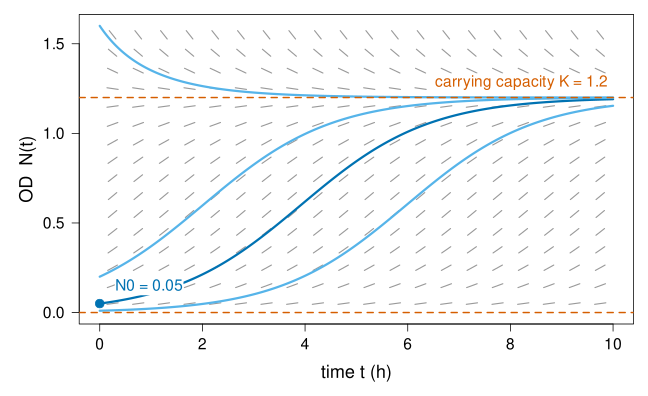
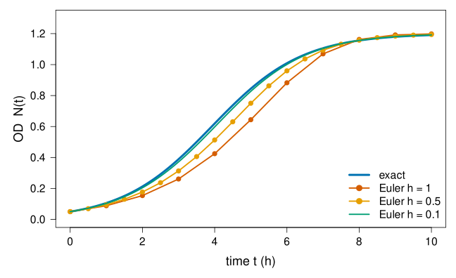
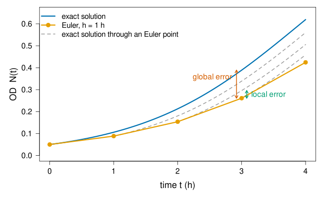
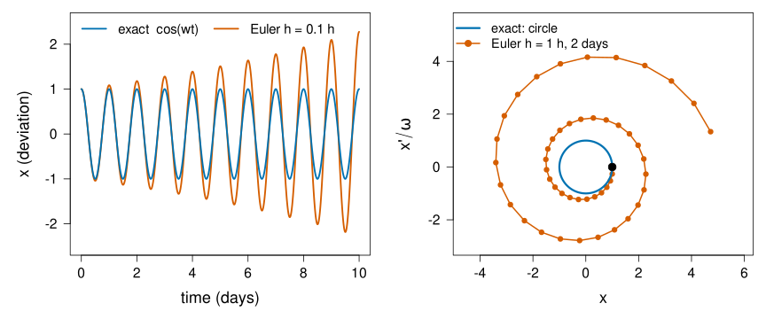

Most models in biology say how fast something changes, not what it is: growth, decay, infection, binding. Those are ordinary differential equations (ODEs). Very few have a formula for the solution, so we step through time numerically.
An ODE model is rate in − rate out. With a starting value it is an initial value problem.
Euler’s method: follow the slope for a short step h, recompute the slope, repeat. Ten lines of code.
Its error: localO(h^2) per step, globalO(h) at the end. Order 1: halving h halves the error, read off a log–log plot.
It can fail: too large a step gives negative concentrations, spurious boom–bust cycles, or oscillations that grow without end.
Systems (the SIR epidemic) and higher-order equations (a 24-hour oscillator) use the same method, with vectors.
Biology: exponential and logistic growth (exact solution known, so we can measure errors), the SIR model.
Recap: Euler already failed once
In Why numerical analysis? we stepped drug clearance C' = -kC (k = 0.8 per hour) forward with 3-hour steps:
k <-0.8; h <-3C <-numeric(9); C[1] <-10# mg/Lfor (i in1:8) C[i +1] <- C[i] - h * k * C[i]signif(C, 2)# [1] 10 -14 20 -27 38 -54 75 -110 150
Each step multiplies by 1 - hk = -1.4: negative concentrations, growing without bound.
With h = 0.5 the factor is 0.6 and the answer is fine.
Today: where that formula comes from, how accurate it is when it works, and how to know which case you are in.
ODEs as models: rate in − rate out
An ODE says how fast a quantity changes, from what is known about flows:
Model
ODE
Rates
Drug clearance
C' = -kC
out: k = 0.8 per hour
mRNA level
m' = \alpha - \delta m
in: \alpha = 10 per min; out: \delta = 0.2 per min
Logistic growth
N' = rN\,(1 - N/K)
r = 0.8 per hour, K = 1.2 (OD)
Together with a start value this is an initial value problem (IVP): y'(t) = f(t, y), \qquad y(t_0) = y_0.
f gives the slope at every time and state. Solving the IVP means finding the curve y(t) that starts at y_0 and has slope f everywhere.
Exponential and logistic growth: exact answers
From calculus:
N' = rN has N(t) = N_0 e^{rt}. Grows for ever.
N' = rN(1 - N/K) has (separation of variables) N(t) = \frac{K}{1 + (K/N_0 - 1)\,e^{-rt}}, \qquad K = 1.2,\ N_0 = 0.05,\ r = 0.8 \text{ per hour}.
K <-1.2; N0 <-0.05; r <-0.8exact <-function(t) K / (1+ (K / N0 -1) *exp(-r * t))round(exact(0:5), 4)# [1] 0.0500 0.1059 0.2126 0.3888 0.6193 0.8443
We use the logistic because we know the answer: every error today is measured, not guessed.
Real models (SIR, gene circuits, pharmacokinetics with several compartments) have no formula. That is why we need numerics.
Direction field: the ODE as a picture

At each point (t, N) draw a short line with slope f(t, N) = rN(1 - N/K).
A solution follows the lines. Different start values give different curves; they never cross.
N = 0 and N = K are equilibria (slope 0). Steepest growth at N = K/2.
Euler’s method: follow the slope
Take a small step h along the tangent, then look again:
Euler is behind the true curve: the slope keeps increasing during each step, and Euler uses the slope at the start.
After 3 h the error is 0.26 - 0.39 = -0.13: a third of the true value. h = 1 is too big here.
Euler in R
euler <-function(f, t0, y0, h, n) { t <- t0 + (0:n) * h y <-numeric(n +1); y[1] <- y0 # R vectors start at index 1for (i in1:n) y[i +1] <- y[i] + h *f(t[i], y[i])data.frame(t = t, y = y)}f <-function(t, N) r * N * (1- N / K) # f(t, y), even if t is unusedout <-euler(f, 0, N0, h =1, n =5)round(out$y, 4)# [1] 0.0500 0.0883 0.1538 0.2611 0.4245 0.6439
The loop is the whole method. f always takes (t, y), so the same euler works for every ODE.
The first values match the hand table.
Smaller steps, closer to the truth

Error at t = 5 h: -0.20 with h = 1, -0.094 with h = 0.5, -0.017 with h = 0.1.
Error roughly proportional to h. Why, and how to check it?
Local and global error

Local error: error made in one step, starting on the exact curve through the previous point. From Taylor: \tfrac{h^2}{2}\,y'', so O(h^2).
Global error: y_n - y(t_n), everything accumulated since t_0.
Why global error is O(h)
One step: local error \approx \tfrac{h^2}{2}\,y''. Check on the first logistic step, y''(0) = 0.0281:
h
1
0.5
0.25
0.1
local error
0.0175
0.0039
0.00093
0.000144
predicted \tfrac{h^2}{2}y''(0)
0.0141
0.0035
0.00088
0.000141
Halving h divides the local error by about 4.
To reach time T takes n = T/h steps. Adding up T/h local errors of size C h^2: \text{global error} \approx \frac{T}{h}\cdot C h^2 = C\,T\,h = O(h).
Halving h makes each step 4× more accurate but doubles the number of steps: the total improves 2×. Euler is order 1.
Near K, the logistic behaves like y' = -r\,(N - K): the same test equation with rate r.
Stable only for h < 2/r = 2.5 h. With h = 3 (rh = 2.4), Euler settles into a boom–bust cycle 0.77 ↔︎ 1.43.
A confident wrong answer: a clean, repeating cycle that the true model does not have. Check: halve the step. The cycle disappears.
Systems of ODEs: the SIR epidemic
Susceptible S, infected I, recovered R in a population of N = 10\,000:
S' = -\beta \frac{SI}{N}, \qquad I' = \beta\frac{SI}{N} - \gamma I, \qquad R' = \gamma I
\beta = 0.3 per day (infectious contacts), \gamma = 0.1 per day (recovery: 10 days infectious). R_0 = \beta/\gamma = 3.
Start: S = 9990, I = 10, R = 0. Rate in − rate out again: \beta SI/N flows from S to I, \gamma I from I to R.
Vector form: \mathbf y = (S, I, R), \mathbf y' = \mathbf f(t, \mathbf y). Euler is unchanged: \mathbf y_{n+1} = \mathbf y_n + h\,\mathbf f(t_n, \mathbf y_n).
SIR in R
beta <-0.3; gamma <-0.1; N <-10000# per day; R0 = beta/gamma = 3sir <-function(t, y) { S <- y[1]; I <- y[2]c(-beta * S * I / N, beta * S * I / N - gamma * I, gamma * I)}euler_sys <-function(f, t0, y0, h, n) { # one row per time point Y <-matrix(0, n +1, length(y0)); Y[1, ] <- y0for (i in1:n) Y[i +1, ] <- Y[i, ] + h *f(t0 + (i -1) * h, Y[i, ]) Y}Y <-euler_sys(sir, 0, c(9990, 10, 0), h =1, n =160)c(peak =max(Y[, 2]), day =which.max(Y[, 2]) -1)# peak day# 3127.315 41.000
The only change from euler: y is a vector, so the solution is a matrix (time × variable).
S + I + R = 10\,000 to 10^{-11} for everyh: Euler keeps sums exactly. A conservation check finds bugs, not step-size error.
Higher-order ODEs → first-order systems
A 24-hour rhythm in its simplest form: the deviation x of a clock protein from its mean obeys x'' = -\omega^2 x, \qquad \omega = \frac{2\pi}{24} \text{ per hour}, \qquad x(0) = 1,\ x'(0) = 0. Exact solution: x(t) = \cos \omega t, period 24 h.
Recipe: name each derivative except the highest as a new variable.
An order-m equation becomes m first-order ones; it needs m initial values. Every solver only handles \mathbf y' = \mathbf f(t, \mathbf y).
Euler on an oscillation: it spirals out
w <-2* pi /24# one cycle per 24 hosc <-function(t, y) c(y[2], -w^2* y[1])for (h inc(1, 0.1, 0.01)) { Y <-euler_sys(osc, 0, c(1, 0), h, n =240/ h) x <- Y[nrow(Y), ]cat(h, sqrt(x[1]^2+ (x[2] / w)^2), "\n") # amplitude after 10 days; exact: 1}# 1 2849.977# 0.1 2.275467# 0.01 1.085723
Each step multiplies the amplitude by \sqrt{1 + \omega^2 h^2} > 1, for everyh. No step is small enough to be stable for long times.
The spiral

Left: h = 0.1 h, the amplitude grows by 8.6 % per day. Right: h = 1 h, the orbit in the (x, x'/\omega) plane spirals outwards instead of closing.
Check: track a quantity that should stay constant (here the amplitude). Drift means step-size error.
Before you trust an ODE solution
Halve the step and compare. If the answer moves in a digit you care about, the step was too large.
Measure the order on a test problem with a known answer (logistic): slope 1 for Euler. Another slope means a bug.
Stability: for each decay rate k in the model, need h < 2/k. Negative concentrations, sign-flipping or sudden cycles are warning signs.
Plausibility and invariants: concentrations \ge 0; conserved totals (S + I + R) catch typos; quantities that should be constant (an amplitude) catch step-size error.
Plot the solution, and look at it at the resolution of the steps.
Summary
An ODE model is rate in − rate out; with a start value it is an initial value problemy' = f(t, y), y(t_0) = y_0. The direction field shows f as slopes.
Euler: y_{n+1} = y_n + h\,f(t_n, y_n), the first-order Taylor step. Ten lines of code.
Local errorO(h^2), global errorO(h): order 1, slope 1 on a log–log plot. Without an exact solution, the change when h is halved estimates the error. Six digits on the logistic: 830 000 steps.
Instability: on y' = -ky each step multiplies by 1 - kh; need h < 2/k. Too large a step gives negative concentrations or a spurious cycle; on an oscillation Euler spirals out for everyh.
Systems: same formula with vectors (SIR). Higher-order ODEs: introduce y_2 = x', … to get a first-order system.
Next:Runge–Kutta and adaptive step size: higher order, automatic step control, and the library solvers deSolve::ode and solve_ivp.